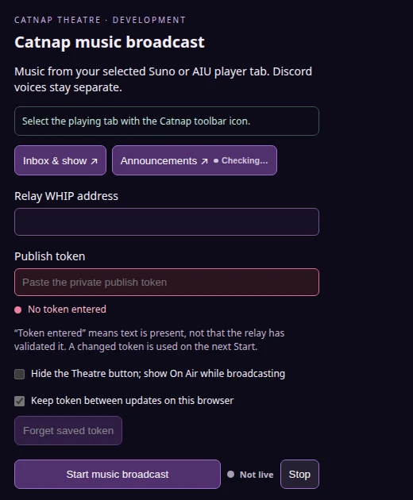
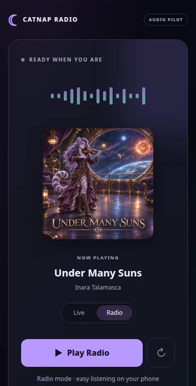
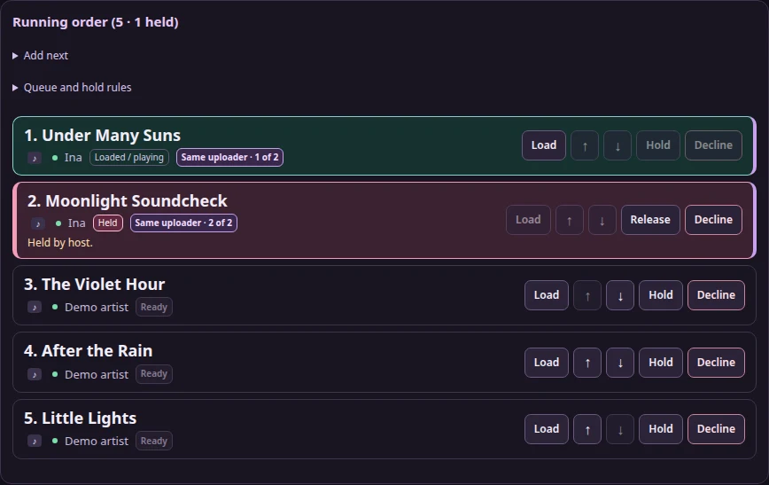
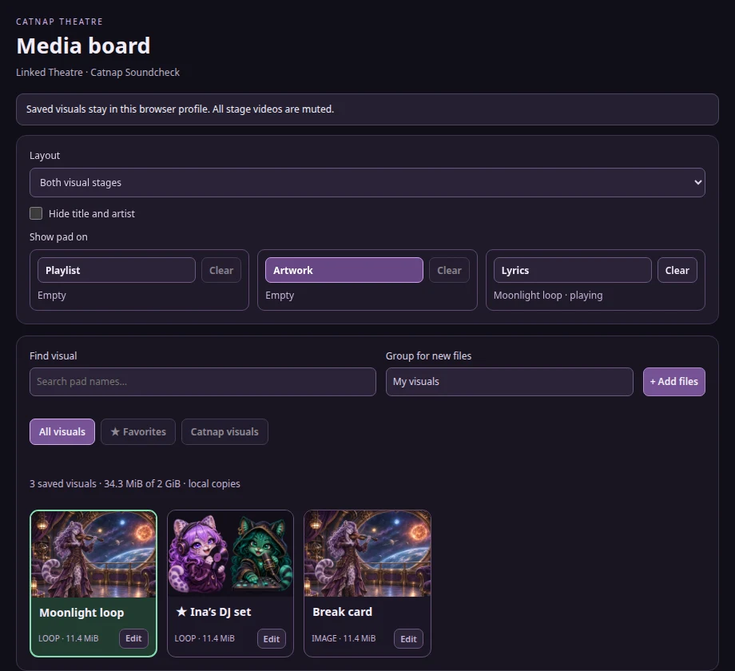
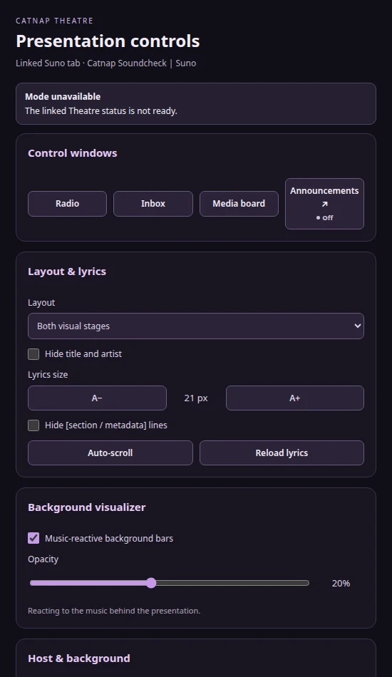
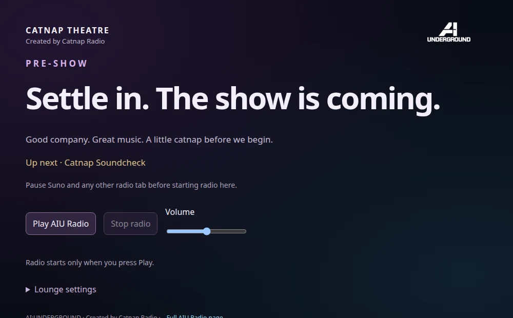

Inbox → playlist
Take requests from the AIU Uploader. Fill a Suno playlist and keep it in show order.
Catnap Theatre
Big cover art. Lyrics you can read across the room. A little Catnap magic for your next show.
Desktop Chrome & Brave · No GPT or AI account

Community · with Ina
Open a Suno playlist and click Theatre. Bring up the cover, the lyrics, or the whole running list.
Host · with Len
High-quality music on a phone or desktop.* Keep the chat and voices in Discord.


Host controls
Your running order on one side. The audience’s Theatre on the other.

Take requests from the AIU Uploader. Fill a Suno playlist and keep it in show order.
Load the next song in silence. Play it when ready, or turn on AP autoplay.
Pick a channel in Discord. Let Theatre announce the next song there.
Host · Media Board
Put pictures, GIFs and muted MP4 or WebM loops on the artwork or side stages. Use the Media Board and music bars with a regular Suno playlist or an inbox show.



Host · add a track
Suno and YouTube come through the inbox. Add other links yourself in Running order → Add next.
Between sets
Use the lounge before the show, for a break, or after the last song. Play AIU Radio, put up your next show time, or open a saved Suno playlist.

A quick word on sign-in
Catnap asks for no GPT, Suno or Discord passwords. Community uses the Suno tab you already opened. Host’s optional features use the AIU Uploader, a Suno authorization prompt, the Discord tab you choose, or your personal radio key.
* Inbox-to-playlist needs Suno MCP access and the workstation companion. Broadcast uses Catnap’s hosted relay. Planned live performers may use a capture or avatar app.